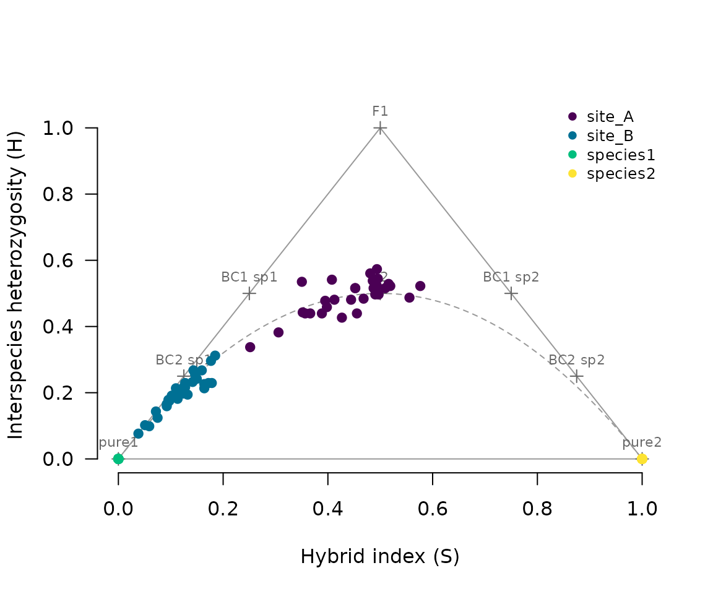

This vignette walks through a small example: two pure reference groups and two hybrid sites, simulated so that the true histories are known. The full tutorial runs the package on five real datasets, one for each common situation: a captive cross with a known pedigree, an advanced intercross with a genetic map, a closed population founded once, a genetic rescue typed at microsatellites, and an invasive hybrid zone.
library(hybridclock)
ex <- hybridclock_example()
table(ex$groups)
#>
#> site_A site_B species1 species2
#> 30 30 20 20
ex$truth
#> site generation hybrid_age_both hybrid_age_rare backcrosses arrival_rate
#> 4 site_A 4 3.641667 3.754127 0.5416667 0
#> 15 site_B 15 9.592318 14.787010 2.7037638 0Markers and hybrid scores
Diagnostic markers are SNPs nearly fixed for different alleles in the
two reference groups. With locus, one SNP per locus is kept
so markers are effectively unlinked. Shared loci, common in both
species, are used later to measure inbreeding.
mk <- diagnostic_markers(ex$genotypes, ex$groups, "species1", "species2", locus = ex$locus)
sh <- shared_loci(ex$genotypes, ex$groups, "species1", "species2", locus = ex$locus)
c(diagnostic = nrow(mk), shared = nrow(sh))
#> diagnostic shared
#> 314 106
sc <- hybrid_scores(ex$genotypes, mk)
plot_triangle(sc, ex$groups)
Site A sits around the F2 position, as expected for a young hybrid swarm. Site B hugs the lower left edge: its hybrids have backcrossed repeatedly into species 1.
Recent hybrids, one animal at a time
cl <- classify_hybrids(sc)
table(ex$groups, cl$class)
#>
#> BC2_species1 F2 later pure1 pure2
#> site_A 0 17 13 0 0
#> site_B 3 0 27 0 0
#> species1 0 0 0 20 0
#> species2 0 0 0 0 20Animals that fit none of the early classes are called
later. Their ages are a population question.
Population histories
A reference set of simulated histories is matched to the data: the
same number of markers and shared loci, the same sample size, and ranges
of settings that are plausible for the study system. Real analyses
should use thousands of histories (n_sims = 4000 or more)
and 50 generations; this example is kept small so it runs quickly.
ref <- build_reference(n_sims = 300, generations = 20, breeders = c(20, 150),
n_markers = nrow(mk), shared_freq = sh$freq, sample_size = 20)
clock <- train_clock(ref, committees = 5)
clock
#> hybridclock model: hybrid_age_both, hybrid_age_rare, backcrosses, arriving, arrival_rate
#> reference: 314 markers, 106 shared loci, samples of 20 animals, breeders 20 to 150
#> 90% intervals; accuracy on held-out runs:
#> target typical_error coverage
#> arrival_rate 0.723 0.85
#> arriving NA 0.73
#> backcrosses 0.092 0.89
#> hybrid_age_both 0.177 0.89
#> hybrid_age_rare 0.172 0.89
#> (for arriving, coverage is the share called correctly at p > 0.5)
#> individual classes are used when at least 95% of hybrids fit an early class
#> samples made up mostly (80% or more) of F1s are dated by their classesThe printed accuracy comes from simulated runs that were not used to fit or calibrate the models. Now the two sites:
hyb <- ex$groups %in% c("site_A", "site_B")
est <- estimate_history(clock, sc[hyb, ], ex$groups[hyb],
diag = orient_genotypes(ex$genotypes, mk)[hyb, ],
shared = ex$genotypes[hyb, sh$column])
est[, c("population", "method", "hybrid_age_both", "hybrid_age_both_lower", "hybrid_age_both_upper",
"hybrid_age_rare", "backcrosses")]
#> population method hybrid_age_both hybrid_age_both_lower
#> 1 site_A population clock 5.174486 3.615142
#> 2 site_B population clock 9.372751 5.393654
#> hybrid_age_both_upper hybrid_age_rare backcrosses
#> 1 7.346403 5.032743 0.978732
#> 2 16.084401 12.056945 2.933403Reading the answer
Each population gets one answer, and method says where
it came from:
- individual classes: most hybrids fit early classes, and those are mostly F1s and backcrosses. Their ages follow directly from the classes (F1 = 1, first backcross = 1.5, second backcross = 1.75, F2 = 2).
- population clock: otherwise. The sample’s summaries are compared with the simulated reference.
How many hybrids must fit early classes is learned from the reference when the clock is trained, and printed with the clock. With few or weak markers, even animals many generations old fit some early class, so the classes are then used only for samples made up mostly (80% or more) of F1s, which stay recognizable with few markers (heterozygous nearly everywhere), and only if the reference shows such samples are dated accurately that way.
Intervals are calibrated on held-out reference histories. Each
sample’s interval is centred on its estimate and scaled by how large the
error tends to be for samples with similar summaries (learned by a
forest), so that coverage holds across ages and kinds of sample, not
only on average: in a comparison on simulated histories, coverage stayed
between 86% and 97% at every true age for a nominal 90%, while intervals
scaled only by the size of the estimate covered 76% of the oldest
histories and were three times as wide for the youngest. The
information column says how much narrower the hybrid-age
interval is than the spread of ages the reference allows: near 1 the
data pin the age down, near 0 the answer mostly reflects the reference’s
range, and note says so.
F2-like animals alone do not settle the question: in a swarm that
mates among itself, F3, F4 and later generations look the same as F2s
one animal at a time. The population as a whole tells them apart,
through the mix of classes, linkage and drift, which is what the clock
reads. The other tier’s estimates are kept in columns starting
classes_ and clock_.
Three measures are reported:
| Measure | Column | Meaning |
|---|---|---|
| Hybrid age (both species) | hybrid_age_both |
generations back to the nearest pure ancestor of either species, averaged over the lines of each hybrid’s pedigree |
| Hybrid age (rare species) | hybrid_age_rare |
the same, counting only the lines back to pure ancestors of the rarer species: how long ago its genes entered |
| Backcrosses | backcrosses |
matings with pure animals since the first cross |
With ongoing arrivals of pure animals, both ages level off rather than rising with calendar time, because new crosses keep shortening pedigree lines. Under one-sided backcrossing, the rare-species age keeps rising while the both-species age levels off.
Choosing reference settings
The reference is the clock’s prior: it should cover what is plausible for the study system, and match the data (markers, shared loci, missing data, sample size).
| Situation | founders |
Arrivals (kinds) |
generations |
map |
het_dropout |
|---|---|---|---|---|---|
| Natural contact zone | "pure" |
default (either or both species) | 50, or less if contact is recent | chromosome number and a cM range |
c(0, 0.3) for RAD or GBS data |
| Introduced or invading species | "pure" |
default | years since introduction / generation time | as above | as above |
| Single release, then closed (translocation, fenced site) | "pure" |
c(closed = 1, one = 0, both = 0) |
years since release / generation time | as above | as above |
| Hatchery release or stocking |
"pure" or "F1"
|
default | years since stocking began / generation time | as above | as above |
| Lab cross, families of F1s, F2s or backcrosses |
c("F1", "BC1_1", "BC1_2") with
founder_samples = TRUE
|
c(closed = 1, one = 0, both = 0) |
10 or the line’s age | the real map if known |
c(0, 0) for array or amplicon data |
| Advanced intercross line | "F1" |
c(closed = 1, one = 0, both = 0) |
the line’s age plus a margin | as above | as above |
| No genetic map | any | any | any | list(chromosomes = c(n, n), length_cM = c(50 * n, 150 * n)) |
In the validation, giving the design made a large difference. Advanced intercross lines of known age (8 to 34 generations) were dated within about 12% with the design given, and 10-80% too old, with intervals twice as wide, from the generic natural-contact settings. Every interval still contained the truth.
- Give what you know, but keep ranges generous. Each setting narrows the reference, and a narrower reference gives a sharper answer, but only if the real population could plausibly have come from it. In the validation, a lab cross described exactly (6 breeders, no other options) gave intervals of +/-3% that missed the truth, while the same design with 4-100 breeders gave honest intervals. Prefer “4-100 breeders” to “exactly 6”.
-
Breeding design (
breeders,sib_mating,pools,assort): when the mating system is known, say so. For an advanced intercross line kept at 50-200 breeders with mating among relatives avoided, the reference with that design (sib_mating = c(0, 0),pools = 1,assort = c(0, 0)) dated lines of known age within about 5% (generations 9-13), against about 12% with the defaults. -
Breeding population size (
breeders) matters most for ages beyond about five generations, where drift becomes the main clock. Give the widest plausible range: a range that misses the true size by a factor of two or more biases ages, while a wide range costs little accuracy. Effective population size is the relevant figure. -
Linkage (
map) should always be given for real data. Markers on a chromosome are inherited in blocks, so animals vary more than unlinked markers would allow; without linkage the clock misreads that variation. Exact positions are not needed: the number of chromosomes and a range of map lengths (about 50-150 cM per chromosome) are enough. -
Marker positions with a real map in cM add genotype
switches along chromosomes (junctions), which sharpen the clock
considerably, but the number of switches scales with the map’s length,
so the length must carry uncertainty: give
map_scale = c(0.75, 1.25)with a fixed map. In the validation, a standard mouse map taken as exact gave intervals of +/-5% that missed the truth by 10-16% (in either direction, depending on the map version), while +/-25% map uncertainty gave intervals of about +/-20% that all contained the truth, half as wide as without a map. Positions in base pairs alone, with an uncertain recombination rate, add little. -
Generation range (
generations): the reference’s ages run from 1 togenerations. When markers carry little information, estimates are pulled toward the middle of that range, so young samples come out too old and old ones drift toward the middle. Nearly every study knows the earliest possible contact date; setgenerationsto the time since then divided by the generation time (with a margin). Theinformationcolumn ofestimate_history()shows how much an answer owes to the data: near 0, it mostly reflects the reference’s range. -
Allele dropout (
het_dropout): with RAD or GBS data, check the heterozygosity of animals with a hybrid index near 0.5. If those that look like F1s show clearly less than 1 (for example 0.75), heterozygotes are being called homozygous. Give the reference a dropout range around that value (for examplehet_dropout = c(0.15, 0.35)), and give the same value to the classes,class_settings = class_settings(het_dropout = 0.25), so that F1s are not taken for F2s. Dropout cannot be estimated one animal at a time, because it looks like inbreeding. -
Lab families (
founder_samples = TRUE): with F1 or backcross founders, the reference then also includes samples of the founders themselves, so that families of F1s or first backcrosses are covered as well as their descendants. -
Check the markers with
check_markers(). Markers chosen in reference samples may still be shared by the animals that actually bred, for example when a release strain or cross parents differ from the reference samples. First-generation hybrids expose such markers, because they are heterozygous at every truly diagnostic marker.check_markers()finds likely F1s (hybrid index near 0.5, high heterozygosity) and flags markers at which they are rarely heterozygous; drop the flagged markers. In the validation it found, on its own, the two markers of a lab cross that the cross parents did not differ at, and ten such markers in a mosquito release program. -
Founders that were not quite pure
(
founder_impurity): if the animals that started the population may carry some of the other species’ alleles, for example cross parents from populations with old introgression, give a range such asc(0, 0.05). Markers chosen in reference samples are only diagnostic for the founders if the founders resemble those samples. - Inbreeding: small breeding groups, sibling mating and separate breeding pools are all in the reference, so inbreeding is not read as age.
-
Class settings (
class_settings): the share of hybrids in each early class is one of the summaries, and it decides whether a population is dated by its classes or by the clock. Those classes must be made the same way for the reference and the data, so their settings are given once, tobuild_reference(class_settings = class_settings(...)), stored with the reference, and reused byestimate_history(). Givehet_dropoutfor allele dropout,effective_markers = effective_markers(...)for many linked markers (so that animals are not rejected from every class because their markers come in blocks), andmarkers = mkfor markers that are not fixed. For individual calls,classify_hybrids()takes the same options.
Markers that are not fixed, and microsatellites
Young species pairs often share most of their variation, so few or no SNPs are fixed between them. Their markers can still be used:
- Choose markers with a looser
thresholdindiagnostic_markers()(for example 0.2), and score animals withhybrid_scores(geno, mk, method = "likelihood"). This estimates S and H from each marker’s allele frequencies in the two reference groups (Fitzpatrick 2012), where simple counts would be biased toward the middle. - Build the reference with the same frequencies,
freq = list(freq1 = mk$freq1, freq2 = mk$freq2), so the simulated samples carry the same uncertainty as the real ones, and withclass_settings = class_settings(markers = mk), so that the classes in the summaries allow for the frequencies too. -
classify_hybrids()uses the frequencies when givengenotypesandmarkers.
marker_information() sums the squared frequency
differences over markers; a fixed marker counts 1. In simulations,
typical errors in hybrid age rose gradually as this total fell, from
about 20% at 300 to 26% at 126 and 36-39% at 7-12, and the intervals
kept their stated coverage. Very weak marker sets pull young ages
upward.
Microsatellites carry many alleles per locus.
microsat_markers() takes their allele frequencies in the
reference groups, hybrid_scores_microsat() estimates S and
H, and classify_hybrids_microsat() tests the early classes.
The reference takes microsat = ms. For population
estimates, pass the microsatellite scores to
estimate_history() as usual: it classifies animals the same
way the reference did, so that its rule for choosing between classes and
the clock applies. Use classify_hybrids_microsat() for the
individual calls. Note that individual calls of “later” are
conservative: many later-generation animals carry genotypes close to an
early class, so most are called by their nearest early class unless
alpha is raised (see its help page). The population ages do
not depend on this. Linkage is not modeled for microsatellites; they are
usually few and far apart.
Limitations
- Selection against one species’ alleles makes ancestry uneven across markers, which looks like drift, so ages are biased upward.
- Markers must be diagnostic in the populations that actually hybridized, not only in the reference samples.
- Few or weak markers: accuracy depends on the total information in the markers (see above), not their number alone.
-
Arrivals in young swarms: under about five
generations, pure founders still make new hybrids without any arrivals,
so the arrival call is flagged as uncertain
(
arriving_note). - Pooled sequencing cannot be used: the method needs individual genotypes.
Planning
How many markers are needed depends on the question. Individual F1s and first backcrosses are recognizable with a few dozen markers, and in the validation even 10-30 weak markers or microsatellites dated samples of F1s and backcrosses correctly. Telling an F2 family from later generations of a closed population is harder, because the two differ mainly in the length of ancestry blocks along chromosomes: in simulations of lab F2 families, about 50 diagnostic markers were needed to date them within half a generation (17 markers gave 2.6 on average). Advanced generations are dated by drift and linkage, which also need many markers and, ideally, a map.
markers_needed() gives the number of fixed markers
needed to tell a backcross of a given generation from a pure animal:
markers_needed(1:8)
#> generations n_markers
#> 1 1 5
#> 2 2 11
#> 3 3 23
#> 4 4 47
#> 5 5 95
#> 6 6 191
#> 7 7 382
#> 8 8 766